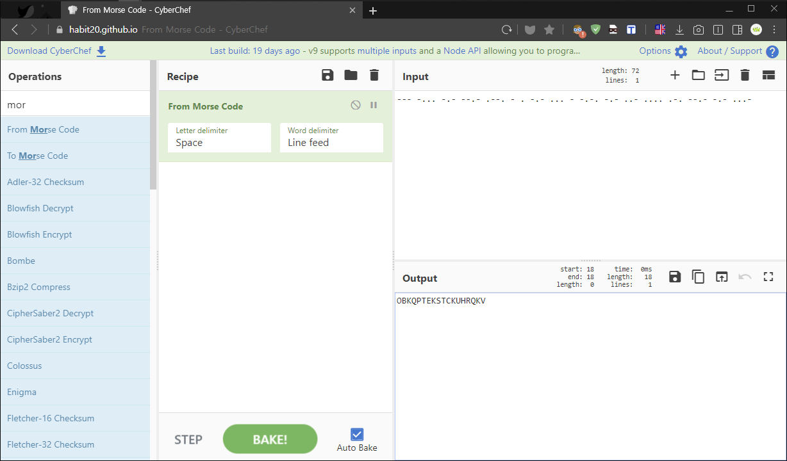
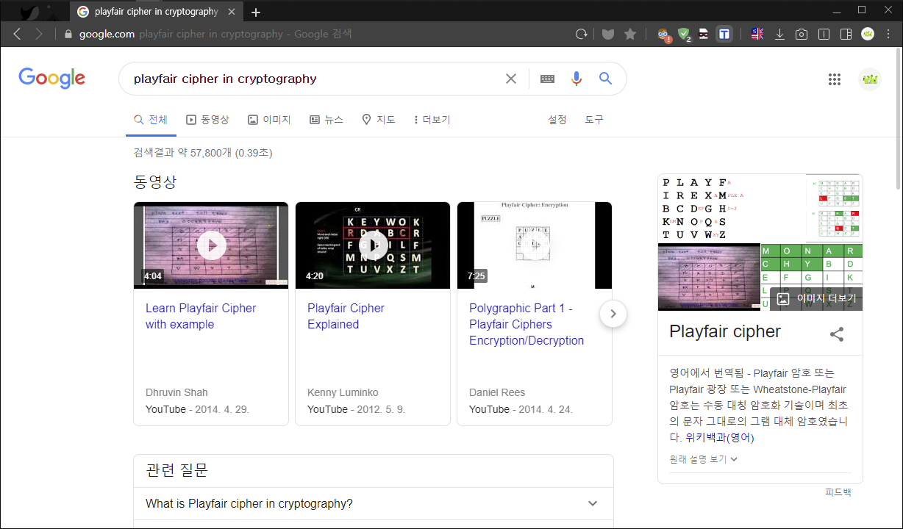
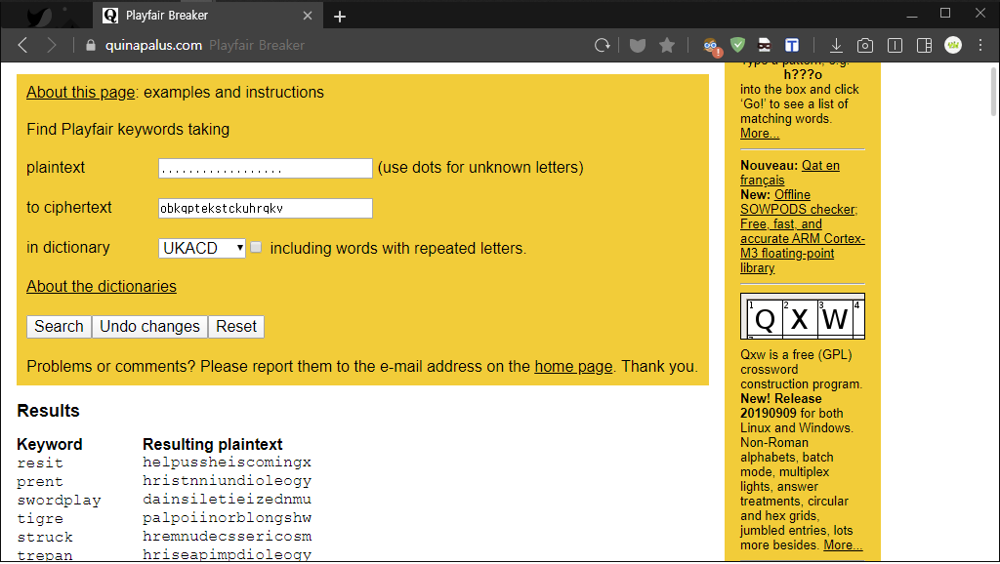

[TGHACK20] The Message
One of our radars have detected a weak transmission coming from the direction of the Earth. I think I know what this is, but I’ll let you handle it. That’s fair play, right?
1 | --- -... -.- --.- .--. - . -.- ... - -.-. -.- ..- .... .-. --.- -.- ...- |
"우리의 레이더 중 하나가 지구의 방향에서 오는 약한 전파를 감지했습니다.
나는 이게 뭔지 알 것 같은데, 하지만 당신이 처리하게 해줄게요.
이건 페어 플레이입니다. 그렇죠?"
(얄미운 친구네…😅😅)
✔ Solution

이 문제는 암호학을 조금이라도 공부한 사람은 모스 부호(Morse Code)라는 사실을 바로 알 수 있다.
모스 부호는 짧은 발신 전류(・)와 긴 발신 전류(-)를 조합하여 각각 알파벳(A-Z)마다 형태를 정해놨다.
CyberChef Tool 도구를 이용해 모스 부호를 해독하면 결과값(Output)을 다음과 같이 얻을 수 있다.
1 | OBKQPTEKSTCKUHRQKV |
정상적인 알파벳 값은 나왔지만 우리가 알아볼 수 없는 단어로 플래그를 제출해도 풀리지 않았다.
여기서 우리가 한 가지 짐작해야 하는 부분은 다른 암호 기법을 한번 더 적용했다는 사실이다.
그럼 문제를 한번 더 유심히 살펴보고 열심히 검색 해보거나 다양한 시나리오를 생각해야 한다.

의심가는 Fair play 문구를 Crypto 단어와 함께 검색을 통해 위와 같은 연관 검색어를 얻었다.
플레이페어 암호는 키값(5*5 행렬)을 사용해 암호화 및 복호화를 진행하는 기법으로
기본적으로 평문값 문자열(알파벳)을 두 자리씩 끊어서 몇 가지 조건에 맞춰 암호화 시킨다.
여기서 자세한 내용 및 조건에 대해 궁금하면 게시물 하단 Notes 참조하면 좋겠다.

이 문제를 풀기 위해서 Brute Forcing 코드를 작성하는 방법도 있지만
온라인 플레이페어 브레이커 사이트를 이용하면 키값과 원문을 손쉽게 찾을 수 있다.
키값은 resit 이를 해독하면 helpussheiscoming 읽을 수 있는 평문이 나왔다.
이제 해당 평문값을 TG20{} 포맷과 함께 다음과 같이 플래그 제출하면 된다.
1 | TG20{helpussheiscoming} |
✔ Notes